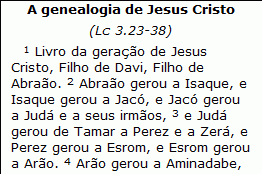
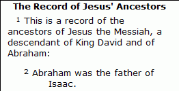
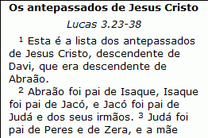
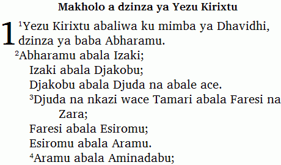

Viewing Paratext resources
While you translate Scripture into a vernacular language, Translation Editor can display other translations if Paratext (6.1 or later) is installed on the computer.
Paratext resources are also known as Standard Texts, Reference Texts, or Model Texts.
Here are examples of vernacular Scripture text and translations in other languages.
